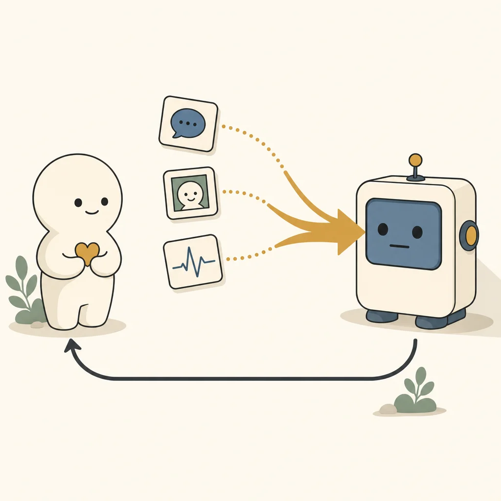
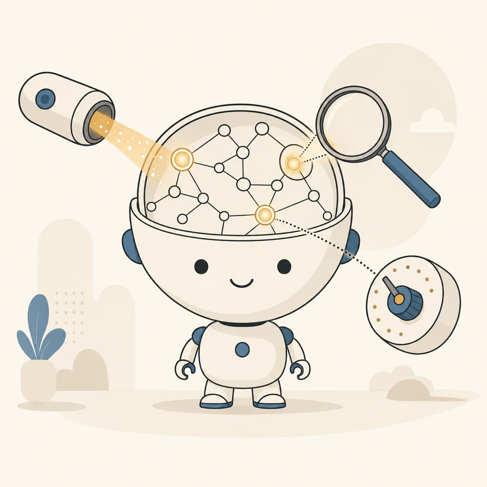

01
感情を「分布」で返す
怒り0.82のような点ではなく、較正された確率分布（例：温かみ38%・無関心31%・皮肉23%・怒り8%）で返す。受け取られ方の割れが見える。
AC ／ CAI 知覚
Technology
事業の接点が多いのは Affective Computing（AC／感情計算）です。私たちはACを土台に据え、その全体像を示す枠組みとして CAI（計算論的感情知性）を用います。ここでは両者の説明と、具体的にできることを示します。
01 — Affective Computing
ACは、人の感情を計算機が測り、扱うための技術領域です。テキスト・音声・行動などに残る感情の痕跡を対象にします。顧客対応、対話AI、学習支援、医療介護、公共の窓口：事業の接点はこの層に集まります。
ACの要点は、何を感じているかを一つに言い当てることではなく、どう受け取られうるかの幅を含めて扱うことです。同じ一文でも、読む人によって温かみと皮肉に割れます。その割れを潰さずに返すほうが、現場の判断には役立ちます。
Affectosphereは、ACの中核を感情基盤モデルとして実装しています。極性・離散感情・皮肉・攻撃性・強度・側面別感情・共感などを、多言語で一つのモデルが扱います。

02 — CAI
CAI（Computational Affective Intelligence／計算論的感情知性）は、感情を扱うAIが備えるべき能力を体系化した枠組みです。代表の査読研究に基づき、Affectosphereのすべての技術は、この地図の上に設計されます。
ACの実装は「知覚（感情を検出する）」に偏りがちです。しかし、感情を社会で本当に活かすには、感じ取り、内に保ち、推し量り、表し、やりとりし、ふるまいを律する：という一連の力が要ります。
CAIは、この全体を6つの能力として定義し、何ができていて、何が足りないのかを見通せるようにする地図です。Affectosphereは、知覚に留まらず、この地図の全域に事業機会を見ています。

03 — The Six Abilities
それぞれの力の意味と、Affectosphereの取り組みを示します。事業としての接点が多いのは、ACが担う「知覚」です。
感情を観測し、測定する力。Affectosphereは感情を点ではなく確率分布で捉え、本質的な曖昧さとモデルの迷いを分離して返します。感情基盤モデルが担う中核で、事業の接点も最も多い能力です。
感情を内部に保ち、受け渡す力。曖昧さを潰さずに表現し、人とAI・人と人のあいだで気持ちを伝える。既存サービスが最も手薄な領域であり、私たちが重視する機会です。
文脈から感情の原因や推移を推し量る力。なぜその感情が生じたのか、次にどう変化しうるかを、根拠とともに扱います。
感情を表し、生み出す力。状況に応じた適切な感情表現を、押し付けでなく設計可能な形で生成します。
人とAIが感情をやりとりする力。読み取った感情に対して、行動推奨など次の一手を返し、対話や体験を噛み合わせます。
感情的なふるまいを律する力。過度に迎合しない、不確実なときは控える：安全で誠実な振る舞いを設計要件に据えます。
04 — Core Technology
テキスト・音声・行動などの入力を、感情基盤モデルが処理し、分布・不確実性・行動推奨として返します。その中身を6つに分けて示します。
Input
テキスト・音声・行動など、作業前や対話の中で得られる情報。
Foundation Model
多タスク・多言語を1モデルで。較正された推論を行う中核。
Output
感情の確率分布＋曖昧さの分離＋次の行動推奨。
Field
人の判断を代替せず、見落としを減らす材料として届ける。
極性・離散感情・皮肉・攻撃性・強度・側面別感情・共感などを、多言語で一つのモデルが扱います。用途ごとに専用モデルを作る必要がなく、データの少ない領域にも軽い適応で届く：従来の個別開発では難しかった展開を可能にします。
本質的な曖昧さ（aleatoric）とモデルの迷い（epistemic）を数理的に分離して返します。MCMCに基づく事後分布から較正された不確実性を得る：この手法は代表の査読研究に基づきます。自信がないときは「わからない」と正直に示せるのが要です。
出力される確率が、実際の確からしさと一致するように較正します。汎用LLMの「0.8」が本当に80%を意味しない問題を避け、現場で意思決定に使える数値にします。
少数言語・小規模領域など、採算が合わず切り捨てられてきた感情のロングテールに、一つの基盤モデルから届きます。やさしい日本語を含む多言語に対応していきます。
感情AIの評価指標（REACH・VEIL・TILT）を研究として公開し、測り方の共通語をつくります。誰もが同じものさしで質を測れることが、市場全体の信頼につながります。
顔を撮らない・個人を特定しない測り方を選べます。不確実性を正直に示す／人の判断を代替しない：倫理を後付けでなく設計要件に据えます。
05 — What We Can Do
ACとCAIの能力を、使える機能として並べます。各項目に、ACとCAIのどこに当たるかを添えました。
01
怒り0.82のような点ではなく、較正された確率分布（例：温かみ38%・無関心31%・皮肉23%・怒り8%）で返す。受け取られ方の割れが見える。
AC ／ CAI 知覚
02
「言葉そのものが曖昧なのか（aleatoric）」「モデルが迷っているのか（epistemic）」を別の数値で返す。自信がないときは正直に示す。
AC ／ CAI 知覚
03
極性・離散感情・皮肉・攻撃性・強度・側面別感情・共感などを、多言語で1つの基盤モデルが扱う。データの少ない領域にも軽い適応で届く。
AC ／ 基盤モデル
04
感情を返して終わりではなく、顧客が設定したルールに基づき「次にとるべき行動（例：有人対応へエスカレーション）」を返す。
CAI 相互作用
05
テキストで「大丈夫」、音声でフラストレーション：その食い違いを数値化します。テキストに加えて、視線・映像・音声からの計測にも対応を広げています。
AC ／ マルチモーダル
06
組織や会場など多人数を対象とする場合も、個人を特定せず集団レベルで推定する設計を選べます。監視ではなく、包摂と改善のための測定です。
AC ／ 集団推定
06 — Use Cases
同じ1つの基盤モデルを、現場の文脈に合わせて導入します。以下は想定する活用像です（有用性は各現場の検証を前提とします）。
口コミや問い合わせの感情が、肯定・否定など数段階にしか分けられない。
感情の内訳と確からしさを分布で返し、皮肉や不満の混ざり方まで見える形にする。
汎用LLMの判定が実行ごとに揺れ、応答の品質を保証できない。
較正された感情の分布と行動推奨を返し、「怒っている顧客は有人対応へ」など次の一手の判断材料にできる。
組織の状態を知りたいが、個人の監視になってしまう設計は使えない。
本人の同意を得た社内アンケートなどから、個人を特定せず集団レベルで状態を推定する設計を採れる。
相談文や会話の奥にある不安・痛みの兆候が埋もれ、誤りが許されない。
感情を較正された確率で示し、確信が低いときは「わからない」と返す。断定せず、専門職の判断を補助する道具として設計。
学びの場の戸惑いや意欲が、言葉にならず見えない。
やり取りの感情を曖昧さを保ったまま捉え、つまずきや関心の変化を支援者が汲み取りやすくする。
来場者の反応を知りたいが、文章以外（視線・表情・声）の計測が必要になる。
来場者の反応の把握と体験の設計を支える。文章に加えて視線・映像・音声の計測にも対応し、展示の現場で検証しながら届けます。
問い合わせや声の感情が、件数としてしか扱われない。
市民の声の感情を多言語で分布として捉え、やさしい日本語での応対や、見落としの少ない窓口対応を支える。
07 — How We Deliver
単品のAPIから、現場に合わせた導入支援、受託・顧問まで。要望に合わせて選べます。
A
目的の整理 → 技術の選定・組み合わせ → 試作 → 評価 → 組み込み。一つの製品ではなく、感情AIの研究開発力そのものを場面ごとに提供します。
B
多様な感情タスクを一つで扱う感情基盤モデル Affeline。研究用・非商用のライセンスで公開するほか、商用利用のライセンスと、用途に合わせたAPIの形でご提供します。
C
感情AIの判定の偏りや妥当性を検証します。導入前の点検、評価の設計、企業・開発者向けの感情AI倫理教育まで。
D
注釈者間の不一致の分析、受け取り方の割れが分かる感情データの作成と提供。お手元のデータの分析も承ります。
08 — Data & Privacy
感情データは、扱いが社会的な論点になっている領域です。私たちが設計上の前提にしていることを示します。
顔を撮らない、個人を特定しない測り方を選べます。多人数を対象とする場合も、個人を特定せず集団レベルで推定する設計を採れます。
確信が低いときは「わからない」と示します。確からしさを偽らないことを、出力の要件にしています。
出力は判断材料です。最終的な判断と解釈は人に委ねる前提で、画面も運用も設計します。
対象とするデータの範囲、保存、利用の範囲は、導入のたびに明文化します。具体的な取り扱いは個別のご相談のうえ定めます。
09 — Why Affectosphere
| 観点 | 汎用LLM／既存の感情AI | Affectosphere |
|---|---|---|
| 感情の出力 | 点推定・数段階の分類 | 較正された確率分布 |
| 曖昧さ | 1つに合算 | 本質的曖昧さ × 推定ブレを分離 |
| 多タスク・多言語 | 都度プロンプト／都度専用モデル | 1基盤モデルで統合・少数領域に強い |
| 次の行動 | 返さない | 行動推奨を返す |
| 導入 | 顧客任せ | 現場に合わせた応用支援込み |
| 倫理 | 較正・プライバシーが曖昧 | 不確実性を正直に・顔を撮らない選択肢 |
※ 性能・有用性は、各現場での検証を前提にお伝えします。
10 — Honesty
✓
何をどこまで測れているかを、能力ごとに示します。評価の方法と結果は、導入をご判断いただく前にお渡しします。
→
視線・映像・音声への対応、より多くの言語・領域への展開を、現場での検証とあわせて進めています。
!
確信が低いときは「わからない」と示します。測れていないことを、測れたことにはしません。
CAIの枠組みも、感情を分布と不確実性で扱う手法も、代表の査読研究に基づいています。論文・受賞・研究助成の一覧は 研究グループサイト にまとめています。私たちは、能力ごとに「どこまでできているか」を正直に示したうえでお引き受けします。